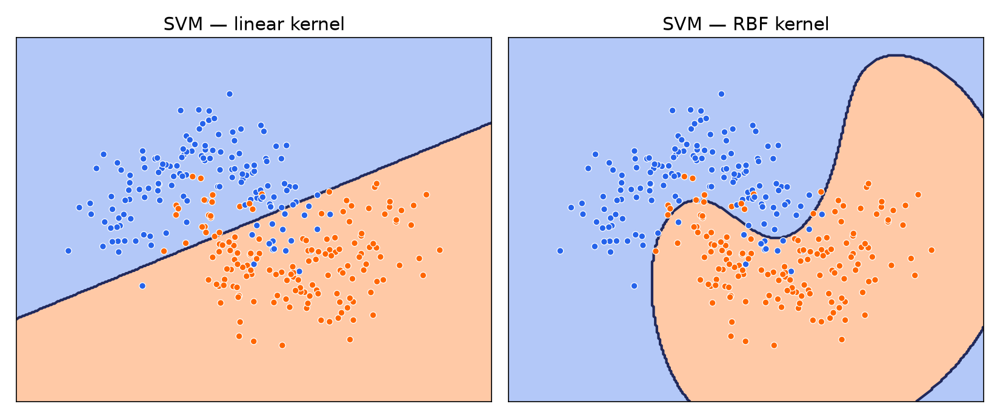
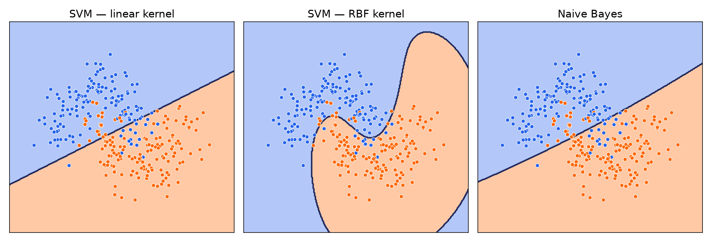
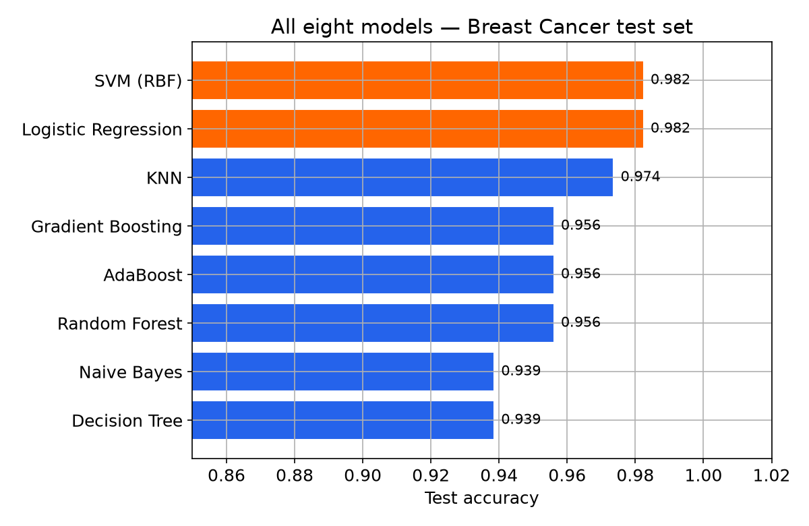

SVM خطی را انتخاب میکند که بیشترین فاصله را از نزدیکترین نقاط هر دو کلاس داشته باشد.
خطی که به هر دو کلاس فاصلهی زیادی دارد، در برابر نمونههای جدید و کمی نویزی، مطمئنتر عمل میکند تا خطی که بهسختی و از نزدیک، دو کلاس را رد کرده.
مفهوم کلیدی
بردارهای پشتیبان (Support Vectors)
تنها نقاطی که دقیقاً روی مرز حاشیه قرار دارند، «بردارهای پشتیبان» نامیده میشوند.
موقعیت مرز نهایی فقط به همین چند نقطه بستگی دارد.
باقی نقاط، حتی اگر حذف شوند، مرز را عوض نمیکنند.
فقط مفهومی
کرنلها (Kernels): فراتر از خط راست
SVM خطی، مثل رگرسیون لجستیک، فقط مرز خطی میسازد. اما با یک تابع به نام کرنل،
داده را بهطور ضمنی به فضایی «تصور میکند» که در آن جداسازی خطی ممکن است، بدون اینکه واقعاً محاسبات را در آن فضای پیچیده انجام دهد.
جزئیات ریاضی این ترفند (Kernel Trick) از حوزهی این دوره خارج است؛ کافی است بدانید این قابلیت با یک پارامتر در دسترس است.
دیدن اثر کرنل
Linear در برابر RBF

کرنل RBF میتواند مرزی منحنی و منعطف بسازد؛ دقیقاً وقتی مفید است که داده مثل اینجا، بهشکل خطی جداشدنی نیست.
نکتهی مهم
SVM هم به مقیاس ویژگیها حساس است
StandardScaler قبل از SVM
SVM، مثل KNN هفتهی قبل، فاصلهمحور است؛ اگر ویژگیها مقیاسهای خیلی متفاوتی داشته باشند،
مرزی که پیدا میکند میتواند بهشدت اشتباه باشد. همیشه قبل از SVM، ویژگیها را مقیاسبندی کنید.
یک رویکرد کاملاً متفاوت دیگر
SVM هندسی فکر میکند: فاصله و حاشیه.
حالا یک مدل که احتمالاتی فکر میکند.
فقط یک نگاه
Naive Bayes
بهجای یادگرفتن یک معادله یا رأیگیری بر اساس فاصله، Naive Bayes مستقیم از
قضیهی بیز استفاده میکند تا احتمال هر کلاس را، با فرض سادهکنندهی
«همهی ویژگیها از هم مستقلاند» (همان فرض Naive)، محاسبه کند.
این فرض تقریباً هیچوقت دقیقاً درست نیست، اما در عمل، مخصوصاً برای دادهی متنی، شگفتآور خوب کار میکند؛
دقیقاً به همین دلیل، کلاسیکترین الگوریتم فیلترهای اسپم است، همان مثالی که این دوره را با آن شروع کردیم.
در سه صفحهی بعد، همین فیلتر اسپم را با یک دیتاست کوچک و عدد واقعی میسازیم.
مثال واقعی
۸ ایمیل، دو کلمهی کلیدی
همان قانون دستی هفتهی اول («اگر Free در ایمیل بود → اسپم») را بهخاطر بیاورید؛
حالا بهجای یک قانون قطعی، از حضور/غیاب دو کلمه (Free و Meeting) در ۸ ایمیل قبلی، احتمال یاد میگیریم.
Email
Free
Meeting
Label
#1
✓
✗
Spam
#2
✓
✗
Spam
#3
✓
✓
Spam
#4
✗
✗
Spam
#5
✗
✓
Not Spam
#6
✗
✓
Not Spam
#7
✗
✗
Not Spam
#8
✓
✓
Not Spam
دقت کنید ایمیل ۸ هم Free دارد ولی اسپم نیست («وقت آزاد این هفته؟ برای جلسه هماهنگ کنیم»)؛ یک کلمه بهتنهایی کافی نیست، برای همین ترکیب چند کلمه را با هم میسنجیم.
محاسبهی دستی · قدم ۱
اول: احتمالهای اولیه (Prior) و شرطی (Likelihood)
P(Spam) , P(word | Spam)
P(Spam)
4/8 = 0.5
P(Not Spam)
4/8 = 0.5
P(Free=✓ | Spam)
3/4 = 0.75
P(Free=✓ | Not Spam)
1/4 = 0.25
P(Meeting=✗ | Spam)
3/4 = 0.75
P(Meeting=✗ | Not Spam)
1/4 = 0.25
هر احتمال شرطی، فقط از شمردن سطرهای همان جدول به دست میآید؛ مثلاً از ۴ ایمیل اسپم، ۳ تا Free داشتند، پس P(Free=✓|Spam) = 3/4.
نرمالسازی: 0.281 / (0.281+0.031) ≈ 90٪ Spam، در برابر ≈ 10٪ Not Spam ← پیشبینی: Spam
همینجاست که فرض «Naive» به کار میآید: چون Free و Meeting را مستقل فرض کردیم، کافی بود دو احتمال شرطی را در هم ضرب کنیم.
بدون این فرض، باید احتمال هر ترکیب ممکن از کلمات را از داده حساب میکردیم؛ برای یک ایمیل واقعی با هزاران کلمه، این عملاً غیرممکن است.
دیدن اثر
مرز تصمیم Naive Bayes، در کنار SVM

بدون هیچ هایپرپارامتر مهمی برای تنظیم، بسیار سریع (هم آموزش، هم پیشبینی)، و یک baseline خوب برای مقایسه با مدلهای پیچیدهتر.
یکی هندسی (بیشترین فاصلهی امن)، دیگری احتمالاتی (قضیهی بیز)؛ دو نگاه کاملاً متفاوت به همان مسئله.
قدم بعدی: یک قدم به عقب؛ این دو هفته چند مدل دیدیم، نقشهی کاملشان چه شکلی است؟
مقایسهی عددی نهایی
هشت مدل، همان دیتاست، همان تقسیم train/test

رگرسیون لجستیک و SVM بالاترین دقت را دارند، اما فاصلهی همهی مدلها روی این دیتاست کم است؛ این خودش یک یافتهی مهم است: تفاوت واقعی را باید در سرعت، تفسیرپذیری، و رفتار روی دادههای دیگر جست، نه فقط این یک عدد.
جمعبندی بصری
نقشهی راه کامل طبقهبندی
خانواده
الگوریتم نمونه
خطی (Linear)
Logistic Regression
مبتنی بر نمونه (Instance-based)
KNN
مبتنی بر درخت (Tree-based)
Decision Tree
گروهی (Ensemble): Bagging
Random Forest
گروهی (Ensemble): Boosting
AdaBoost, Gradient Boosting
مبتنی بر مارجین (Margin-based)
SVM
احتمالاتی (Probabilistic)
Naive Bayes
بوستینگ صنعتی
XGBoost, LightGBM, CatBoost
شبکهی عصبی (Neural Networks)
MLP
جمعبندی نهایی هفته
Random Forest و Ensemble Learning نشان دادند چطور ترکیب مدلهای ضعیف، یک مدل قوی میسازد؛
SVM مرزی با بیشترین فاصلهی امن پیدا کرد؛
Naive Bayes یک نگاه احتمالاتی و سریع بود.
هیچ مدلی همیشه برنده نیست؛ انتخاب مدل یعنی سنجیدن دقت، سرعت، و تفسیرپذیری در کنار هم.